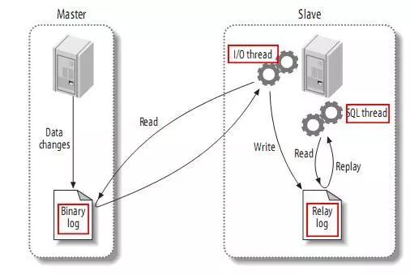

主从复制是指一台服务器充当主数据库服务器，另一台或多台服务器充当从数据库服务器，主服务器中的数据自动复制到从服务器之中。对于多级复制，数据库服务器即可充当主机，也可充当从机。MySQL主从复制的基础是主服务器对数据库修改记录二进制日志，从服务器通过主服务器的二进制日志自动执行更新。
主服务器上面执行的语句在从服务器上面再执行一遍，在MySQL-3.23版本以后支持。
存在的问题：时间上可能不完全同步造成偏差，执行语句的用户也可能是不同一个用户。
把主服务器上面改变后的内容直接复制过去，而不关心到底改变该内容是由哪条语句引发的，在MySQL-5.0版本以后引入。
存在的问题：如果修改的行数过多，造成的开销比较大。
MySQL默认使用基于语句的复制，当基于语句的复制会引发问题的时候就会使用基于行的复制，MySQL会自动进行选择。
在MySQL主从复制架构中，读操作可以在所有的服务器上面进行，而写操作只能在主服务器上面进行。主从复制架构虽然给读操作提供了扩展，可如果写操作也比较多的话（多台从服务器还要从主服务器上面同步数据），单主模型的复制中主服务器势必会成为性能瓶颈。

如上图所示，主服务器上面的任何修改都会保存在二进制日志Binary log里面，从服务器上面启动一个I/O thread（实际上就是一个主服务器的客户端进程），连接到主服务器上面请求读取二进制日志，然后把读取到的二进制日志写到本地的一个Realy log里面。从服务器上面开启一个SQL thread定时检查Realy log，如果发现有更改立即把更改的内容在本机上面执行一遍。
如果一主多从的话，这时主库既要负责写又要负责为几个从库提供二进制日志。此时可以稍做调整，将二进制日志只给某一从，这一从再开启二进制日志并将自己的二进制日志再发给其它从。或者是干脆这个从不记录只负责将二进制日志转发给其它从，这样架构起来性能可能要好得多，而且数据之间的延时应该也稍微要好一些。
准备服务器Server1和Server2，如果在同一个服务器的话则安装mysql时需要改变其端口。
在安装之前必须先检查主机上有没有安装过mysql，如果安装过的话必须先卸载。
下载软件包：
wget https://repo.mysql.com//mysql80-community-release-el7-1.noarch.rpm
本地安装：
yum localinstall mysql80-community-release-el7-1.noarch.rpm
安装mysql：
yum install mysql-community-server
设为开机启动：
systemctl enable mysqld
systemctl daemon-reload
启动mysql：
systemctl start mysqld
以上步骤就安装好mysql8了。
获取mysql的临时密码：
grep 'temporary password' /var/log/mysqld.log
登录mysql：
mysql -uroot -p
会提示输入密码，输入之前获取的临时密码即可登录。
此时需要修改mysql的密码，要不然之后的步骤也会强制提示你需要修改密码：
ALTER USER 'root'@'localhost' IDENTIFIED BY '121b33dAj934J1^Sj9ag';
mysql8默认对密码的强度有要求，需要设置复杂一点，要不然也会提示错误。
刷新配置：
FLUSH PRIVILEGES;
在主从配置之前需要确保两台mysql需要同步的库状态一致。
配置文件默认在/etc/my.cnf下。
在配置文件中新增配置：
[mysqld]
## 同一局域网内注意要唯一
server-id=100
## 开启二进制日志功能，可以随便取（关键）
log-bin=mysql-bin修改配置后需要重启才能生效：
service mysql restart
重启之后进入mysql：
mysql -uroot -p
在master数据库创建数据同步用户，授予用户 slave REPLICATION SLAVE权限和REPLICATION CLIENT权限，用于在主从库之间同步数据。
CREATE USER 'slave'@'%' IDENTIFIED BY '@#$Rfg345634523rft4fa';
GRANT REPLICATION SLAVE, REPLICATION CLIENT ON *.* TO 'slave'@'%';
语句中的%代表所有服务器都可以使用这个用户，如果想指定特定的ip，将%改成ip即可。
查看主mysql的状态：
show master status;
记录下File和Position的值，并且不进行其他操作以免引起Position的变化。
在从my.cnf配置中新增：
mysqld]
## 设置server_id,注意要唯一
server-id=101
## 开启二进制日志功能，以备Slave作为其它Slave的Master时使用
log-bin=mysql-slave-bin
## relay_log配置中继日志
relay_log=edu-mysql-relay-bin 修改配置后需要重启才能生效：
service mysql restart
重启之后进入mysql：
mysql -uroot -p
change master to master_host='172.17.0.2', master_user='slave', master_password='@#$Rfg345634523rft4fa', master_port=3306, master_log_file='mysql-bin.000001', master_log_pos= 2830, master_connect_retry=30;
master_host ：Master的地址
master_port：Master的端口号
master_user：用于数据同步的用户
master_password：用于同步的用户的密码
master_log_file：指定 Slave 从哪个日志文件开始复制数据，即上文中提到的 File 字段的值
master_log_pos：从哪个 Position 开始读，即上文中提到的 Position 字段的值
master_connect_retry：如果连接失败，重试的时间间隔，单位是秒，默认是60秒
在从mysql中查看主从同步状态：
show slave status \G;
此时的SlaveIORunning 和 SlaveSQLRunning 都是No，因为我们还没有开启主从复制过程。
开启主从复制：
start slave;
再次查看同步状态：
show slave status \G;
SlaveIORunning 和 SlaveSQLRunning 都是Yes说明主从复制已经开启。
若SlaveIORunning一直是Connecting，有下面4种原因：
1、网络不通，检查ip端口
2、密码不对，检查用于同步的用户名和密码
3、pos不对，检查Master的Position
4、mysql8特有的密码规则问题引起：
ALTER USER 'slave'@'%' IDENTIFIED WITH mysql_native_password BY '@#$Rfg345634523rft4fa';
将密码规则修改为：mysql_native_password
如果需要指定想要主从同步哪个数据库，可以在master的my.cnf添加配置：
binlog-do-db：指定mysql的binlog日志记录哪个db
或者在slave的my.cnf添加配置：
replicate-do-db=需要复制的数据库名，如果复制多个数据库，重复设置这个选项即可 replicate-ignore-db=需要复制的数据库名，如果复制多个数据库，重复设置这个选项即可
如果想要同步所有库和表，在从mysql执行：
STOP SLAVE SQL_THREAD;
CHANGE REPLICATION FILTER REPLICATE_DO_DB = ();
start SLAVE SQL_THREAD;
如果以上步骤出现问题，可以查看日志：
/etc/log/mysqld.log
至此完成了mysql8主从同步搭建工作。
转评赞就是最大的鼓励